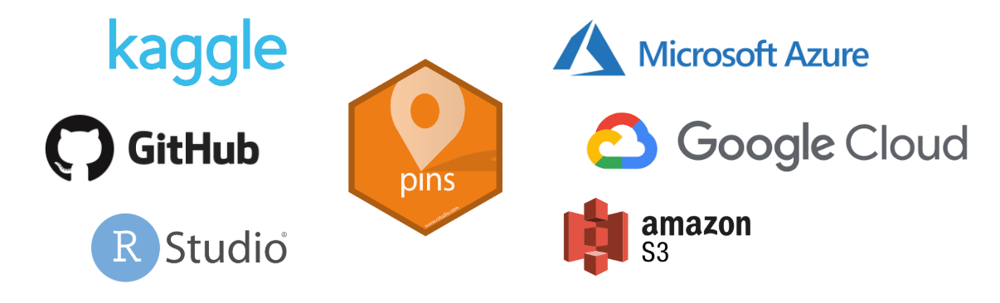
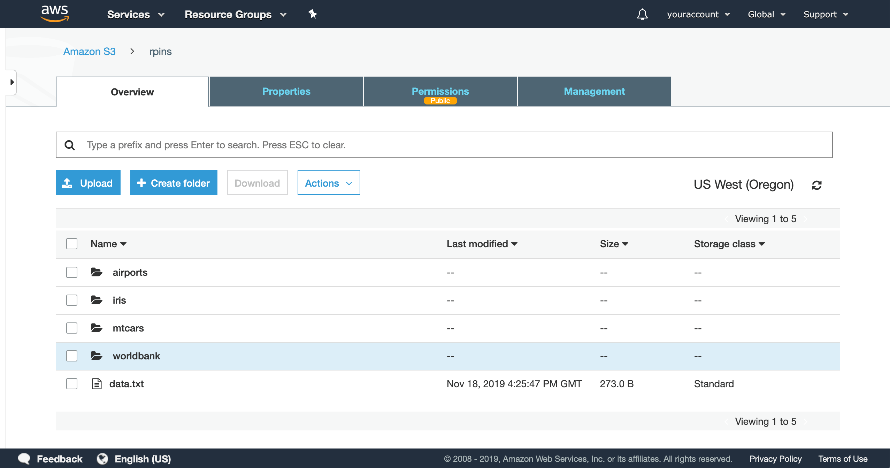

2019-11-28
Please note that the information presented in this post reflects the package as it stood when initially released, and may now be outdated. For the most up-to-date information, kindly refer to https://pins.rstudio.com/.
A new version of pins is available on CRAN! pins 0.3 comes with many improvements and the following major features:
pin_info() including properties particular to each board.You can install this new version from CRAN as follows:
install.packages("pins")In addition, there is a new Use Cases section in our docs, various improvements (see NEWS) and two community extensions being developed to support databases and Nextcloud as boards.
pins 0.3 adds support to find, retrieve and store resources in various cloud providers like: Microsoft Azure, Google Cloud and Amazon Web Services.

To illustrate how they work, lets first try to find the World Bank indicators dataset in Kaggle:
library(pins)
pin_find("indicators", board = "kaggle")# A tibble: 6 x 4
name description type board
<chr> <chr> <chr> <chr>
1 worldbank/world-development-indicators World Development Indicators files kaggle
2 theworldbank/world-development-indicators World Development Indicators files kaggle
3 cdc/chronic-disease Chronic Disease Indicators files kaggle
4 bigquery/worldbank-wdi World Development Indicators (WDI) Data files kaggle
5 rajanand/key-indicators-of-annual-health-survey Health Analytics files kaggle
6 loveall/human-happiness-indicators Human Happiness Indicators files kaggleWhich we can then easily download with pin_get(), beware this is a 2GB download:
pin_get("worldbank/world-development-indicators")[1] "/.../worldbank/world-development-indicators/Country.csv"
[2] "/.../worldbank/world-development-indicators/CountryNotes.csv"
[3] "/.../worldbank/world-development-indicators/database.sqlite"
[4] "/.../worldbank/world-development-indicators/Footnotes.csv"
[5] "/.../worldbank/world-development-indicators/hashes.txt"
[6] "/.../worldbank/world-development-indicators/Indicators.csv"
[7] "/.../worldbank/world-development-indicators/Series.csv"
[8] "/.../worldbank/world-development-indicators/SeriesNotes.csv" The Indicators.csv file contains all the indicators, so let’s load it with readr:
indicators <- pin_get("worldbank/world-development-indicators")[6] %>%
readr::read_csv()Analysing this dataset would be quite interesting; however, this post focuses on how to share this in S3, Google Cloud or Azure storage. More specifically, we will learn how to publish to an S3 board. To publish to other cloud providers, take a look at the Google Cloud and Azure boards articles.
As you would expect, the first step is to register the S3 board. When using RStudio, you can use the New Connection action to guide you through this process, or you can specify your key and secret as follows. Please refer to the S3 board article to understand how to store your credentials securely.
board_register_s3(name = "rpins",
bucket = "rpins",
key = "VerySecretKey",
secret = "EvenMoreImportantSecret")With the S3 board registered, we can now pin the indicators dataset with pin():
pin(indicators, name = "worldbank/indicators", board = "rpins")That’s about it! We can now find and retrieve this dataset from S3 using pin_find(), pin_get() or view the uploaded resources in the S3 management console:

To make this even easier for others to consume, we can make this S3 bucket public; which means you can now connect to this board without even having to configure S3, making it possible to retrieve this dataset with just one line of R code!
pins::pin_get("worldbank/indicators", "https://rpins.s3.amazonaws.com")# A tibble: 5,656,458 x 6
CountryName CountryCode IndicatorName IndicatorCode Year Value
<chr> <chr> <chr> <chr> <dbl> <dbl>
1 Arab World ARB Adolescent fertility rate (births per… SP.ADO.TFRT 1960 1.34e+2
2 Arab World ARB Age dependency ratio (% of working-ag… SP.POP.DPND 1960 8.78e+1
3 Arab World ARB Age dependency ratio, old (% of worki… SP.POP.DPND.OL 1960 6.63e+0
4 Arab World ARB Age dependency ratio, young (% of wor… SP.POP.DPND.YG 1960 8.10e+1
5 Arab World ARB Arms exports (SIPRI trend indicator v… MS.MIL.XPRT.KD 1960 3.00e+6
6 Arab World ARB Arms imports (SIPRI trend indicator v… MS.MIL.MPRT.KD 1960 5.38e+8
7 Arab World ARB Birth rate, crude (per 1,000 people) SP.DYN.CBRT.IN 1960 4.77e+1
8 Arab World ARB CO2 emissions (kt) EN.ATM.CO2E.KT 1960 5.96e+4
9 Arab World ARB CO2 emissions (metric tons per capita) EN.ATM.CO2E.PC 1960 6.44e-1
10 Arab World ARB CO2 emissions from gaseous fuel consu… EN.ATM.CO2E.GF… 1960 5.04e+0
# … with 5,656,448 more rowsThis works since pins 0.3 automatically register URLs as a website board to save you from having to explicitly call board_register_datatxt().
It’s also worth mentioning that pins stores the dataset using an R native format, which requires only 72MB and loads much faster than the original 2GB dataset.
Boards like Kaggle and RStudio Connect, store additional information for each pin which you can now easily retrieve with pin_info().
For instance, we can retrieve additional properties from the indicators pin from Kaggle as follows,
pin_info("worldbank/world-development-indicators", board = "kaggle")# Source: kaggle<worldbank/world-development-indicators> [files]
# Description: World Development Indicators
# Properties:
# - id: 23
# - subtitle: Explore country development indicators from around the world
# - tags: (ref) business, economics, international relations, business finance...
# - creatorName: Megan Risdal
# - creatorUrl: mrisdal
# - totalBytes: 387054886
# - url: https://www.kaggle.com/worldbank/world-development-indicators
# - lastUpdated: 2017-05-01T17:50:44.863Z
# - downloadCount: 42961
# - isPrivate: FALSE
# - isReviewed: TRUE
# - isFeatured: FALSE
# - licenseName: World Bank Dataset Terms of Use
# - ownerName: World Bank
# - ownerRef: worldbank
# - kernelCount: 422
# - topicCount: 7
# - viewCount: 254379
# - voteCount: 1121
# - currentVersionNumber: 2
# - usabilityRating: 0.7647
# - extension: zipAnd from RStudio Connect boards as well,
pin_info("worldnews", board = "rsconnect")# Source: rsconnect<jluraschi/worldnews> [table]
# Properties:
# - id: 6446
# - guid: 1b9f04c5-ddd4-43ca-8352-98f6f01a7034
# - access_type: all
# - url: https://beta.rstudioconnect.com/content/6446/
# - vanity_url: FALSE
# - bundle_id: 16216
# - app_mode: 4
# - content_category: pin
# - has_parameters: FALSE
# - created_time: 2019-09-30T18:20:21.911777Z
# - last_deployed_time: 2019-11-18T16:00:16.919478Z
# - build_status: 2
# - run_as_current_user: FALSE
# - owner_first_name: Javier
# - owner_last_name: Luraschi
# - owner_username: jluraschi
# - owner_guid: ac498f34-174c-408f-8089-a9f10c630a37
# - owner_locked: FALSE
# - is_scheduled: FALSE
# - rows: 44
# - cols: 1To retrieve all the extended information when discovering pins, pass extended = TRUE to pin_find().
Thank you for reading this post!
Please refer to rstudio.github.io/pins for detailed documentation and GitHub to file issues or feature requests.